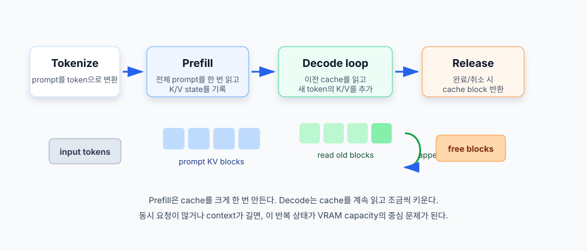
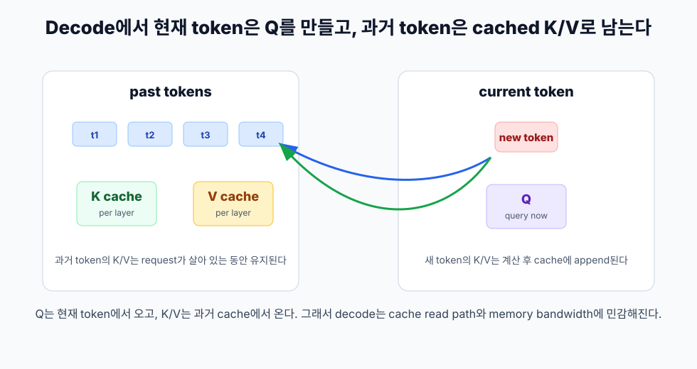
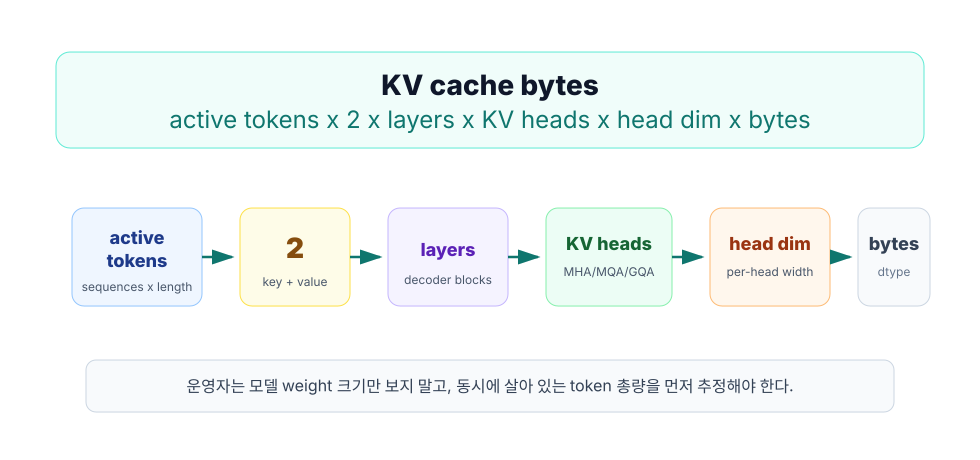
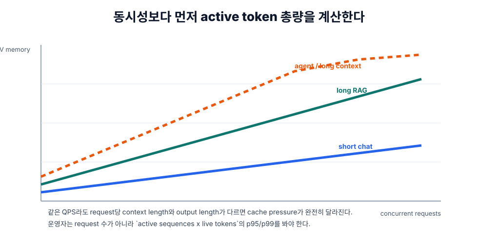
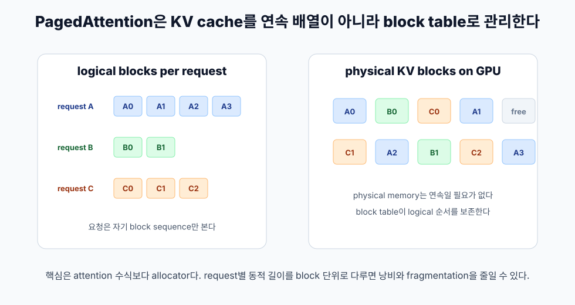
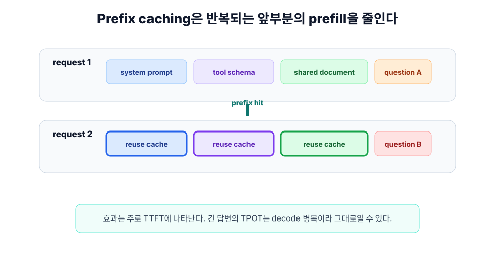

5장. KV cache가 LLM serving의 중심 병목이 되는 순간¶
LLM API가 느릴 때 가장 먼저 떠올리는 원인은 보통 "모델이 크다"이다. 하지만 production serving에서는 모델 weight가 이미 GPU에 올라간 뒤의 문제가 더 자주 터진다. 같은 모델, 같은 GPU, 같은 endpoint인데도 어떤 날은 빠르고 어떤 날은 느리다. 짧은 질문은 잘 처리되는데 긴 문서 기반 질문이나 agent loop가 섞이면 첫 토큰이 늦게 나오고 tail latency가 흔들린다.
이때 운영자가 먼저 봐야 하는 것이 KV cache다.
KV cache는 모델이 이미 읽은 token의 key/value state를 저장해 decode 단계에서 같은 계산을 반복하지 않게 해 준다. 기능만 보면 단순한 최적화처럼 보이지만, 실제 serving에서는 VRAM capacity, 동시성, context length, batching, prefix reuse, quantization, offload 전략을 모두 연결하는 핵심 상태가 된다. 이 장의 목표는 KV cache를 "Transformer 내부 구현"이 아니라 "운영자가 예산을 잡아야 하는 runtime memory"로 이해하는 것이다.
이 장을 끝까지 읽으면 다음 질문에 답할 수 있어야 한다.
- 왜 긴 prompt는 첫 토큰을 늦게 만들고, 긴 답변은 token당 속도를 흔드는가?
- 왜 같은 모델도 MHA, MQA, GQA 구조에 따라 serving capacity가 달라지는가?
- GPU 메모리가 부족할 때 model weight, KV cache, fragmentation 중 무엇을 먼저 의심해야 하는가?
- PagedAttention, prefix caching, KV quantization, offload는 각각 어떤 문제를 푸는가?
- 운영 대시보드에서 어떤 지표를 보면 KV cache 병목을 빠르게 좁힐 수 있는가?
문제는 "모델이 크다"에서 끝나지 않는다¶
모델 weight는 중요하다. 7B, 13B, 70B 모델을 어떤 precision으로 올릴지 결정하지 못하면 serving은 시작도 못 한다. 하지만 weight는 대체로 고정 비용이다. 특정 model replica를 BF16으로 올리면 그 weight memory는 request가 많아져도 갑자기 두 배가 되지 않는다.
KV cache는 다르다. request가 들어올 때마다 생기고, context가 길수록 커지고, decode가 이어지는 동안 계속 살아 있다. 완료되거나 취소된 request의 cache는 반환되지만, 진행 중인 request의 cache는 GPU memory를 계속 점유한다. 그래서 production에서 중요한 질문은 "모델이 올라가는가?" 다음에 바로 "동시에 살아 있는 token을 얼마나 버틸 수 있는가?"가 된다.
다음 세 요청은 모두 QPS 1로 볼 수 있지만 serving 입장에서는 완전히 다르다.
| 요청 유형 | 입력 token | 출력 token | KV cache 관점 |
|---|---|---|---|
| 짧은 chat | 400 | 200 | cache가 작고 수명이 짧다 |
| 긴 RAG 질의 | 12,000 | 500 | prefill cache가 크고 TTFT가 흔들린다 |
| agent loop | 4,000 x 여러 번 | 100 x 여러 번 | 반복 prefix, fan-out, routing이 중요해진다 |
API gateway나 application log에서 세 요청은 모두 /v1/chat/completions 호출로 보일 수 있다. GPU runtime에서는 전혀 다른 workload다. AI 인프라 엔지니어는 endpoint 이름이 아니라 token shape를 봐야 한다.
사용자는 왜 첫 토큰을 기다리는가¶
LLM serving latency는 크게 prefill과 decode로 나눌 수 있다.
Prefill은 입력 prompt 전체를 한 번 읽는 단계다. 사용자가 8,000 token짜리 문서를 붙여 넣으면, 모델은 답변을 시작하기 전에 그 8,000 token을 먼저 처리해야 한다. 이 단계가 길어지면 사용자는 첫 토큰을 오래 기다린다. 그래서 prefill은 TTFT, 즉 time to first token에 직접 영향을 준다.
Decode는 새 token을 하나씩 생성하는 반복 단계다. 모델은 지금까지의 context를 바탕으로 다음 token을 만들고, 그 token을 다시 context에 붙인 뒤 다음 token을 만든다. 답변이 길어질수록 decode 반복 횟수가 늘어난다. 이 단계는 TPOT, 즉 time per output token에 직접 영향을 준다.
문제는 decode가 매번 전체 과거 context를 처음부터 다시 계산하면 비용이 너무 크다는 점이다. 그래서 Transformer serving runtime은 각 layer의 key와 value state를 KV cache에 저장한다. 다음 token을 만들 때는 과거 token의 K/V를 다시 계산하지 않고 cache에서 읽는다.

이 구조는 계산을 줄인다. 대신 메모리 상태를 만든다. AI 인프라 엔지니어가 봐야 하는 trade-off는 여기서 시작한다.
KV cache는 무엇을 저장하는가¶
Self-attention에서 각 token은 query, key, value 벡터로 변환된다. 새 token을 생성할 때 현재 token의 query는 과거 token들의 key와 비교되고, 그 결과로 과거 value들의 가중합을 만든다. 이때 과거 token의 key와 value는 이미 계산된 값이다.
KV cache는 이 과거 key/value tensor를 layer별로 저장한다.

한 token이 들어오면 각 Transformer layer는 그 token에 대한 K와 V를 만든다. 그 값은 decode가 끝날 때까지 살아 있어야 한다. 왜냐하면 뒤에 생성되는 모든 token이 앞선 token들의 K/V를 참조할 수 있기 때문이다. 즉 KV cache의 수명은 "request가 살아 있는 동안"이다.
운영 관점에서는 네 가지 사실이 중요하다.
- KV cache는 model weight와 다르게 요청 수와 context length에 따라 계속 변한다.
- 완료된 요청의 cache는 반환되지만, 진행 중인 요청의 cache는 decode 동안 계속 유지된다.
- 같은 GPU에 여러 request가 동시에 있으면, 각 request의 살아 있는 token 수가 합쳐져 capacity를 결정한다.
- decode는 cache를 계속 읽기 때문에 memory bandwidth, cache locality, scheduler 결정에 민감하다.
이 때문에 단순히 "70B 모델이 GPU에 올라가는가"만으로는 serving 가능 여부를 판단할 수 없다. 모델이 올라간 뒤에도 답변을 생성하는 동안 KV cache가 커진다.
Cache는 request별, layer별, head별로 생긴다¶
KV cache를 하나의 큰 덩어리로 생각하면 계산이 어렵다. 실제로는 다음 차원이 곱해져 만들어진 tensor 상태라고 보면 된다.
- request 또는 sequence
- token position
- Transformer layer
- key/value 구분
- KV head
- head dimension
- dtype
이 중 운영자가 직접 움직이는 것은 request 수, token 수, dtype, runtime 정책이다. layer 수, head dimension, KV head 수는 모델 구조가 정한다. 그래서 모델 선택은 단지 quality나 parameter count의 문제가 아니다. 모델 config가 serving capacity를 결정한다.
예를 들어 같은 8k context를 쓰더라도 KV head 수가 32인 모델과 8인 모델은 cache pressure가 다르다. 같은 GPU에서 같은 동시성을 원한다면 KV head 수가 작은 구조가 유리할 수 있다. 반대로 특정 workload에서 품질이나 attention 특성이 더 중요하면 cache 효율만으로 모델을 고르면 안 된다.
AI 인프라 엔지니어의 판단은 항상 두 문장으로 나뉜다.
- 이 모델 구조는 cache를 얼마나 만든다.
- 이 workload는 cache를 얼마나 오래 붙잡고 있는다.
둘을 곱한 것이 capacity planning의 출발점이다.
크기 공식부터 잡기¶
KV cache memory의 rough estimate는 다음 형태로 잡을 수 있다.
각 항은 다음 뜻이다.
| 항목 | 의미 | 운영상 영향 |
|---|---|---|
| \(T_\text{active}\) | 현재 GPU 안에서 살아 있는 token 총량 | 동시 요청 수와 각 요청의 context length가 곱해진다 |
| \(2\) | key와 value 두 종류의 cache | K만 저장하는 것이 아니라 V도 저장한다 |
| \(L\) | Transformer layer 수 | 깊은 모델일수록 token당 cache가 커진다 |
| \(H_\text{kv}\) | KV head 수 | MHA, MQA, GQA 구조에 따라 크게 달라진다 |
| \(D_\text{head}\) | head dimension | 보통 hidden size와 head 수에서 정해진다 |
| \(B_\text{dtype}\) | element당 byte 수 | FP16/BF16은 보통 2 byte, FP8은 1 byte로 추정한다 |

여기서 가장 실수하기 쉬운 항은 \(T_\text{active}\)다. 이것은 "요청 수"가 아니다. 살아 있는 token 총량이다.
한 request가 2,000 token을 갖고 있고 10개가 동시에 돌면 20,000 active token이다. 한 request가 20,000 token이고 10개가 동시에 돌면 200,000 active token이다. QPS가 같아도 cache pressure는 10배가 된다.
손으로 계산해 보는 capacity 감각¶
다음과 같은 대표적인 decoder-only GQA 형태를 가정해 보자. 이 값은 특정 모델의 보증값이 아니라 capacity 감각을 만들기 위한 rough estimate다.
| 변수 | 값 |
|---|---|
| layer 수 \(L\) | 32 |
| query head 수 | 32 |
| KV head 수 \(H_\text{kv}\) | 8 |
| head dimension \(D_\text{head}\) | 128 |
| KV dtype | BF16, 2 byte |
이때 token 하나의 KV cache는 대략 다음과 같다.
이제 active token 수를 바꿔 보자.
| 시나리오 | 동시 request | request당 live token | active token | KV cache rough estimate |
|---|---|---|---|---|
| 짧은 chat | 32 | 1,024 | 32,768 | 약 4 GiB |
| 긴 RAG | 16 | 8,192 | 131,072 | 약 16 GiB |
| 긴 context 분석 | 8 | 32,768 | 262,144 | 약 32 GiB |
| agent fan-out | 64 | 4,096 | 262,144 | 약 32 GiB |
같은 GPU에서 32개의 짧은 chat은 버틸 수 있어도, 16개의 긴 RAG 요청이 들어오면 갑자기 cache가 같은 수준으로 커진다. 8개의 긴 context 분석과 64개의 agent fan-out이 같은 active token 총량을 만들 수도 있다. 그래서 "동시 request 64개를 버틴다"는 말은 workload shape 없이 의미가 없다.

실제 capacity planning에서는 이 rough estimate에 다음을 더해야 한다.
- model weights
- runtime overhead
- CUDA graph 또는 execution cache
- temporary activations
- allocator 여유분
- fragmentation 또는 block waste
- multi-LoRA, speculative decoding, tool schema 같은 추가 상태
따라서 계산 결과가 80GB GPU에서 78GB라고 해서 운영 가능하다고 보면 안 된다. production에서는 여유분을 남겨야 한다. 특히 p95/p99 context length와 burst concurrency를 함께 봐야 한다.
MHA, MQA, GQA가 왜 capacity 문제인가¶
Attention 구조를 설명할 때 query head 수만 보는 경우가 많다. 하지만 KV cache size에는 query head 수보다 KV head 수가 직접 들어간다.
Multi-Head Attention, 즉 MHA에서는 query head와 key/value head 수가 같다. Query head가 32개면 KV head도 32개다. 이 구조는 cache가 크다.
Multi-Query Attention, 즉 MQA에서는 여러 query head가 하나의 K/V head를 공유한다. KV head 수가 1에 가까워지므로 cache가 크게 줄어든다. 대신 모델 품질, 구현, kernel, hardware 특성에 따라 trade-off가 생길 수 있다.
Grouped-Query Attention, 즉 GQA는 그 중간이다. 예를 들어 query head는 32개지만 KV head는 8개로 줄인다. 그러면 MHA 대비 KV cache는 대략 4분의 1이 된다.
| 구조 | query head | KV head | cache 영향 | 운영 관점 |
|---|---|---|---|---|
| MHA | 많음 | query head와 같음 | 큼 | 품질/구현은 익숙하지만 cache pressure가 크다 |
| MQA | 많음 | 매우 적음 | 작음 | cache는 작지만 모델/커널 특성 확인이 필요하다 |
| GQA | 많음 | 중간 | 중간 | 최신 serving 모델에서 자주 쓰이는 절충이다 |
| MLA 등 latent 계열 | 구조별로 다름 | 직접 비교 주의 | 모델별 확인 필요 | 단순 공식에 바로 대입하기 전에 config와 runtime 구현을 봐야 한다 |
운영자가 모델 카드를 볼 때 num_attention_heads만 보고 멈추면 안 된다. num_key_value_heads 또는 유사한 config를 함께 확인해야 한다. 같은 parameter count와 context length라도 KV head 수가 다르면 동시성 capacity가 달라진다.
Sliding window와 긴 context의 착시¶
긴 context를 지원한다고 해서 모든 layer가 모든 과거 token을 같은 방식으로 보는 것은 아니다. 일부 모델은 sliding window attention을 쓰거나 layer별 attention pattern을 다르게 둔다. 이 경우 cache 수명과 cache size는 모델 구현에 따라 달라진다.
운영자가 주의할 점은 두 가지다.
첫째, marketing context length와 실제 serving memory는 다르다. "128k context 지원"이라는 말은 사용 가능한 window의 상한을 말할 뿐, 같은 GPU에서 128k 요청을 몇 개 동시에 처리할 수 있는지는 말해 주지 않는다.
둘째, runtime이 모델의 attention 구조를 어떻게 지원하는지 확인해야 한다. sliding window, chunked prefill, prefix caching, paged allocation, quantized cache가 모두 같은 조합으로 잘 동작한다고 가정하면 안 된다.
따라서 긴 context 모델을 도입할 때는 다음 checklist를 둔다.
- 모델 config에서 full attention layer와 sliding window layer를 확인한다.
- runtime이 해당 attention pattern을 어떤 backend로 실행하는지 확인한다.
- 최대 context length가 아니라 target concurrency에서의 p95 TTFT/TPOT를 측정한다.
- cache eviction, preemption, offload 정책이 실제로 어떻게 동작하는지 확인한다.
긴 context는 기능이 아니라 capacity 계약이다.
KV cache가 model weights보다 더 급하게 문제가 되는 순간¶
모델 weight는 시작할 때 한 번 올라간다. 같은 model replica가 같은 GPU에서 같은 precision으로 돈다면 weight memory는 거의 고정 비용이다. 반면 KV cache는 traffic shape에 따라 계속 달라진다.
다음 상황에서는 KV cache가 model weights보다 더 급한 운영 문제가 된다.
| 상황 | 왜 문제가 되는가 | 먼저 볼 지표 |
|---|---|---|
| 긴 RAG 문서 질의 | prefill이 길고 request당 active token이 많다 | TTFT, input token length, cache usage |
| multi-turn chat | history가 계속 붙어 context가 커진다 | context length 분포, session별 token 누적 |
| agent loop | 같은 system/tool prompt가 반복되고 호출 수가 많다 | prefix hit, request fan-out, p95 TTFT |
| 높은 동시성 | 각 요청의 cache가 합쳐져 VRAM을 압박한다 | active sequences, waiting queue, GPU memory |
| 긴 답변 생성 | decode가 길어지며 cache 수명이 길어진다 | output token length, TPOT, request duration |
여기서 중요한 것은 평균 prompt length가 아니다. tail이다. 평균 prompt가 1,000 token이어도 p95가 16,000 token이면, capacity planning은 p95와 concurrency를 기준으로 해야 한다. production 장애는 대개 긴 요청과 높은 동시성이 겹칠 때 발생한다.
Scheduler가 KV cache를 더 어렵게 만든다¶
KV cache는 단순한 memory allocation 문제가 아니다. Scheduler가 어떤 request를 같이 batch로 묶을지 결정하기 때문이다.
Prefill은 prompt 전체를 처리한다. 길이가 긴 prompt 하나가 들어오면 GPU를 오래 붙잡을 수 있다. Decode는 token 하나씩 반복한다. 짧은 decode request가 많이 있으면 scheduler는 이들을 묶어 GPU utilization을 높일 수 있다. 하지만 긴 prefill과 많은 decode가 섞이면 문제가 복잡해진다.
운영자가 실제로 보는 현상은 다음과 같다.
- GPU memory는 남아 있는데 waiting queue가 늘어난다.
- 짧은 chat의 TTFT가 긴 RAG 요청 때문에 같이 나빠진다.
- batch size를 키우면 throughput은 좋아지지만 p99 latency가 악화된다.
- long context request를 허용하면 전체 service level objective가 흔들린다.
이때 "GPU가 바쁘다"는 말로는 부족하다. Prefill pressure인지, decode pressure인지, cache capacity pressure인지 나눠야 한다.
| 증상 | 가능성이 높은 원인 | 먼저 해 볼 확인 |
|---|---|---|
| TTFT만 급증 | 긴 prefill, queueing, prefix miss | input length p95, waiting time, prefix hit |
| TPOT만 악화 | decode batch, memory bandwidth, cache read path | output length, running sequences, tokens/sec |
| OOM 또는 preemption | KV cache block 부족 | active tokens, cache block usage |
| 특정 tenant만 느림 | prefix locality 또는 routing 문제 | tenant/session routing, cache residency |
| 평균은 정상인데 p99만 악화 | 긴 tail request와 burst concurrency | p95/p99 context length, burst window |
Scheduler와 KV cache를 분리해서 보면 안 된다. Scheduler는 cache를 소비하는 순서를 정하고, cache pressure는 scheduler가 받을 수 있는 batch를 제한한다.
PagedAttention이 해결한 문제¶
KV cache는 요청마다 길이가 다르고, 생성 중에도 계속 늘어난다. 기존 방식처럼 요청마다 큰 연속 메모리 영역을 미리 잡으면 낭비가 생긴다. 어떤 요청은 짧게 끝나고, 어떤 요청은 길게 이어지고, 어떤 요청은 취소된다. GPU memory 안에 빈 조각이 늘어나면 실제로는 여유가 있어도 새 요청을 넣기 어려워진다.
PagedAttention은 이 문제를 운영체제의 paging과 비슷한 방식으로 푼다. 요청의 KV cache를 고정 크기 block으로 나누고, logical block이 GPU memory의 physical block을 가리키도록 관리한다. 논문은 KV cache가 request마다 크고 동적으로 늘고 줄며, 비효율적으로 관리되면 fragmentation과 중복 때문에 batch size가 제한된다는 문제의식에서 출발한다. vLLM은 이 아이디어를 기반으로 KV cache memory waste를 줄이고 cache sharing을 가능하게 하는 serving system으로 제안되었다.

이 관점에서 PagedAttention은 "attention이 더 똑똑해졌다"라기보다 "KV cache allocator가 serving workload에 맞게 바뀌었다"에 가깝다. 그래서 AI 인프라 엔지니어에게 중요하다. 모델 수식보다 운영 문제가 먼저다.
PagedAttention 이후에도 질문은 남는다.
- block size가 workload에 맞는가?
- 긴 prompt와 짧은 prompt가 섞일 때 scheduler가 어떻게 batch를 구성하는가?
- prefix가 공유되는 요청에서 cache sharing이 실제로 일어나는가?
- cache block이 부족할 때 waiting, preemption, offload 중 무엇이 발생하는가?
이 질문들은 vLLM, TensorRT-LLM, SGLang, KServe 같은 도구를 비교할 때 모두 다시 등장한다.
Fragmentation은 왜 실제 capacity를 줄이는가¶
GPU memory가 10GB 남았다고 해서 10GB짜리 request를 받을 수 있는 것은 아니다. 필요한 형태의 연속 영역이 없거나, runtime이 관리하는 block pool에서 사용할 수 있는 block이 부족하면 request는 기다리거나 실패할 수 있다.
Paged allocation은 이 문제를 완화하지만 없애지는 않는다. block 단위가 너무 크면 마지막 block의 남는 공간이 낭비된다. block 단위가 너무 작으면 block table 관리와 kernel access pattern이 복잡해질 수 있다. 운영자는 보통 block size를 직접 매번 튜닝하지 않더라도, 이런 trade-off가 있다는 사실은 알고 있어야 한다.
중요한 지표는 "GPU memory used" 하나가 아니다.
- 총 KV block 수
- 사용 중인 KV block 수
- free KV block 수
- preempted request 수
- waiting queue length
- request cancellation 후 block 반환 지연
이 지표들이 없다면 cache 병목을 application latency만 보고 추측해야 한다. production에서는 추측보다 runtime metrics가 필요하다.
Prefix caching은 cache compression이 아니다¶
Agent나 RAG workload에서는 같은 prefix가 반복된다. system prompt, tool schema, 긴 문서, 대화 history의 앞부분이 여러 요청에서 공유될 수 있다. Automatic Prefix Caching은 이런 공통 prefix의 KV cache를 재사용해 prefill 계산을 줄이는 전략이다.

이 최적화가 잘 맞는 workload는 명확하다.
- 같은 긴 문서를 두고 여러 질문을 하는 document QA
- 같은 system prompt와 tool schema를 반복하는 agent
- multi-round conversation에서 이전 대화 history를 계속 포함하는 chat
- best-of, parallel sampling, retry처럼 prefix가 같은 여러 branch
하지만 prefix caching은 decode를 없애지 않는다. vLLM 문서도 APC가 prefill 단계의 query processing 시간을 줄이는 최적화이며, 긴 답변 생성처럼 decode가 대부분인 경우에는 이득이 제한된다고 설명한다. 따라서 prefix caching hit가 높아져도 TPOT가 그대로라면 정상이다. 이 경우는 cache reuse 문제가 아니라 decode throughput 문제다.
운영자는 prefix caching을 켤 때 다음을 함께 봐야 한다.
| 확인 항목 | 해석 |
|---|---|
| prefix hit rate | 반복 prefix가 실제로 reuse되는가 |
| TTFT 변화 | prefill 절감이 사용자가 느끼는 첫 토큰 지연을 줄였는가 |
| TPOT 변화 | decode 병목은 그대로인지 확인한다 |
| cache residency | 재사용될 cache가 eviction되지 않고 남아 있는가 |
| workload grouping | 같은 prefix 요청이 같은 replica로 라우팅되는가 |
마지막 항목이 중요하다. prefix cache는 runtime 내부 기능이지만, 실제 hit rate는 gateway routing과도 연결된다. 같은 tenant나 같은 document session의 요청이 매번 다른 replica로 흩어지면 cache reuse 가능성이 떨어진다.
Prefix caching이 실패하는 흔한 이유¶
Prefix caching은 개념상 단순하지만 운영에서는 자주 기대만큼 작동하지 않는다.
첫째, prompt가 byte-level 또는 token-level로 조금씩 달라진다. timestamp, request id, random ordering, JSON field 순서, 공백 차이가 prefix match를 깨뜨릴 수 있다. 같은 의미의 prompt라도 실제 token sequence가 다르면 cache reuse가 어렵다.
둘째, routing이 cache locality를 깨뜨린다. 같은 document session의 요청이 매번 다른 replica로 가면 각 replica는 자기 cache만 갖고 있다. gateway가 stateless round-robin만 한다면 prefix reuse가 기대보다 낮아질 수 있다.
셋째, cache가 너무 빨리 eviction된다. 반복 요청이 들어오기 전에 block이 다른 request 때문에 밀려나면 hit가 나지 않는다. cache hit rate는 request pattern뿐 아니라 memory pressure와도 연결된다.
넷째, workload가 decode-heavy다. 긴 답변을 생성하는 시간이 대부분이면 prefill을 줄여도 전체 latency 개선은 제한된다.
그래서 prefix caching을 도입할 때는 "켜기"보다 "hit가 날 수 있는 prompt와 routing을 만들기"가 더 중요하다.
KV quantization은 메모리만 보는 기능이 아니다¶
KV cache quantization은 cache element를 더 낮은 precision으로 저장해 memory footprint를 줄인다. vLLM의 stable 문서는 FP8 KV cache가 memory footprint를 줄여 더 많은 token을 memory에 저장하고, throughput과 긴 context 지원에 도움을 줄 수 있다고 설명한다. 문서 기준으로 FP8 KV cache에는 per-tensor와 per-attention-head quantization 전략, scale calibration 방식이 존재한다.
여기서 운영자가 조심해야 할 점은 "메모리가 줄면 항상 빨라진다"가 아니라는 것이다.
Quantization은 세 가지 비용을 함께 가져온다.
- quantize/dequantize 또는 quantized-domain 연산 비용
- calibration 품질에 따른 accuracy risk
- attention backend, GPU architecture, model 구조에 따른 성능 차이
따라서 KV quantization은 capacity가 막혔을 때 검토할 수 있는 카드지만, 기본값처럼 켜는 기능으로 취급하면 안 된다. 특히 production에서는 다음 순서가 더 안전하다.
- 동일 workload에서 baseline latency, throughput, quality를 기록한다.
- KV cache memory pressure가 실제 병목인지 확인한다.
- quantization 후 TTFT, TPOT, p95/p99, output quality를 같은 prompt set으로 비교한다.
- calibration dataset과 model/runtime version을 함께 versioning한다.
- fallback 가능한 serving profile을 남긴다.
메모리 절약은 목표가 아니라 trade-off의 한 축이다.
Offload와 tiering은 마지막에 보는 것이 아니다¶
GPU HBM은 빠르지만 작고 비싸다. CPU DRAM, local SSD, remote cache는 더 크거나 저렴할 수 있지만 latency와 bandwidth가 다르다. 긴 context, 많은 session, agent memory를 다루는 workload에서는 KV cache를 GPU 밖으로 옮기거나 계층화하는 전략이 등장한다.
그러나 offload는 무료가 아니다. cache를 GPU 밖으로 내보내면 다시 읽을 때 data movement가 생긴다. decode 단계가 매 token마다 과거 cache를 참조한다는 점을 생각하면, 잘못된 offload는 memory capacity를 늘리는 대신 TPOT를 망칠 수 있다.
운영 판단은 다음 질문으로 시작하면 된다.
- 지금 병목은 capacity인가, bandwidth인가, scheduler인가?
- offload 대상은 곧 다시 읽힐 hot cache인가, 당분간 쓰지 않을 cold cache인가?
- offload가 TTFT를 개선하는가, TPOT를 악화시키는가?
- request cancellation과 eviction policy가 명확한가?
- 장애 시 cache miss가 품질 문제가 아니라 latency 문제로만 끝나는가?
KV cache offload는 "큰 context를 억지로 가능하게 하는 기능"이 아니라 "cache locality와 latency budget을 설계하는 문제"다.
어떤 최적화가 어떤 문제를 푸는가¶
KV cache 관련 기능이 많아지면 모든 것을 한 바구니에 담기 쉽다. 하지만 각 기능은 해결하는 문제가 다르다.
| 전략 | 주로 푸는 문제 | 좋아지는 지표 | 조심할 점 |
|---|---|---|---|
| PagedAttention | allocation, fragmentation, dynamic sequence length | throughput, concurrency, memory utilization | block policy와 scheduler metrics를 봐야 한다 |
| Prefix caching | 반복 prefix의 prefill 중복 | TTFT, prefill compute | routing locality와 exact prefix match가 중요하다 |
| KV quantization | cache footprint | max tokens, concurrency, 때로 throughput | quality와 backend별 성능을 검증해야 한다 |
| Offload/tiering | GPU HBM capacity 부족 | longer context, larger sessions | TPOT와 bandwidth 비용을 악화시킬 수 있다 |
| Context trimming | 불필요한 history 제거 | TTFT, memory, cost | 답변 품질과 tool state 손실을 주의해야 한다 |
| Request routing | cache locality와 tenant isolation | prefix hit, p95 latency | load balancing과 locality가 충돌할 수 있다 |
이 표는 운영 의사결정에 직접 쓸 수 있다. 예를 들어 TTFT만 나쁘고 prefix hit가 낮다면 quantization보다 prefix normalization과 routing을 먼저 본다. TPOT가 나쁘고 memory bandwidth가 포화라면 prefix caching보다 decode batch와 attention backend를 본다.
운영자가 봐야 할 대시보드¶
KV cache를 운영 지표로 바꾸면 다음 dashboard가 필요하다.
| 범주 | 지표 | 질문 |
|---|---|---|
| traffic shape | input tokens, output tokens, context length distribution | 어떤 요청이 cache를 키우는가 |
| concurrency | active sequences, waiting requests, running requests | 살아 있는 cache가 얼마나 쌓이는가 |
| memory | GPU memory used, KV cache allocated blocks, free blocks | capacity가 어디서 막히는가 |
| latency | TTFT, TPOT, p95/p99 latency | prefill 문제인가 decode 문제인가 |
| reuse | prefix cache hit/miss, reused tokens | 반복 prefix가 실제로 이득을 주는가 |
| quality | eval score, regression prompts, refusal/error rate | memory 최적화가 답변 품질을 해치지 않는가 |
이 표를 보면 KV cache는 단일 metric이 아니다. traffic, memory, scheduler, latency, quality를 연결하는 상태다. 좋은 운영자는 "GPU memory가 높다"에서 멈추지 않고 "어떤 request shape가 어떤 cache pressure를 만들고, 그것이 TTFT와 TPOT 중 어디로 나타났는가"까지 추적한다.
가능하면 대시보드에는 다음 breakdown을 둔다.
- model별 cache usage
- tenant별 context length p50/p95/p99
- endpoint별 input/output token histogram
- prefix cache hit rate
- running/waiting/preempted request count
- cache block pool 사용률
- OOM, preemption, timeout, cancellation count
- TTFT와 TPOT의 p50/p95/p99
평균 latency만 보는 대시보드는 KV cache 문제를 늦게 발견한다. cache 문제는 tail에서 먼저 드러난다.
장애 상황에서의 실무 triage 순서¶
LLM endpoint가 느려졌고 KV cache가 의심된다면 다음 순서로 본다.
-
요청 shape를 나눈다. 짧은 chat, 긴 RAG, multi-turn chat, agent loop를 같은 평균 latency로 섞어 보지 않는다.
-
TTFT와 TPOT를 분리한다. TTFT가 나빠지면 prefill, queueing, prefix reuse를 본다. TPOT가 나빠지면 decode batch, memory bandwidth, cache read path를 본다.
-
active token 총량을 계산한다.
running sequences x current context length의 분포를 본다. 평균보다 p95와 p99가 중요하다. -
KV cache 예산을 rough estimate로 계산한다. 공식으로 token당 cache 크기를 잡고, 동시 active token을 곱해 GPU당 cache pressure를 추정한다.
-
runtime metrics를 확인한다. free block, allocated block, waiting request, preemption, prefix hit rate가 없으면 먼저 metric 노출부터 보강한다.
-
최적화를 축별로 분리한다. PagedAttention은 allocation/fragmentation 문제, prefix caching은 reuse 문제, quantization은 footprint 문제, offload는 memory tiering 문제다.
-
변경 전후를 같은 prompt set으로 비교한다. latency만 보지 말고 output quality와 error rate를 함께 본다.
이 순서를 지키면 도구 이름에 끌려가지 않는다. "vLLM을 쓰면 된다" 또는 "FP8을 켜면 된다"가 아니라, 지금 workload의 병목이 어떤 cache 문제인지 먼저 구분하게 된다.
설계 단계에서 미리 정해야 하는 정책¶
KV cache는 장애가 난 뒤에만 보는 항목이 아니다. API와 product를 설계할 때부터 정책으로 들어가야 한다.
Context budget¶
각 endpoint마다 허용할 input token, output token, total context의 상한을 정한다. 무제한에 가까운 context를 허용하면 비용과 latency를 예측하기 어렵다.
Tenant isolation¶
한 tenant의 긴 context 요청이 다른 tenant의 짧은 chat latency를 망치지 않도록 queue, rate limit, routing 정책을 둔다.
Prompt normalization¶
반복 prefix가 있는 workload라면 system prompt, tool schema, document wrapper의 token sequence가 안정적으로 유지되도록 만든다. field ordering, timestamp 삽입 위치, volatile metadata를 관리한다.
Admission control¶
GPU memory가 꽉 찬 뒤에 OOM으로 실패하는 것보다, cache budget 기준으로 request를 기다리게 하거나 거절하는 편이 낫다.
Degradation path¶
긴 context 요청이 폭증할 때 사용할 fallback을 미리 정한다. 예를 들어 context trimming, lower max output token, smaller model route, async batch 처리, queue delay 안내 등이 있다.
이 정책들은 모델 품질과 별개로 service reliability를 만든다.
예제: 긴 RAG 요청이 짧은 chat을 밀어내는 경우¶
상황을 하나 보자.
- GPU 하나에서 같은 model replica가 돈다.
- 짧은 chat은 보통 800 input token, 200 output token이다.
- RAG 요청은 12,000 input token, 600 output token이다.
- 낮 시간에는 RAG 요청 비중이 10%였지만, 특정 고객의 batch 질의로 50%까지 올라갔다.
증상은 다음과 같다.
- 평균 tokens/sec는 크게 나빠지지 않았다.
- 짧은 chat의 TTFT가 p95에서 급증했다.
- GPU memory 사용률이 높아지고 waiting request가 늘었다.
- RAG 요청을 줄이면 chat latency가 회복됐다.
이 상황에서 "모델이 느리다"는 진단은 너무 넓다. 더 정확한 진단은 "긴 RAG prefill과 KV cache pressure가 scheduler를 압박해 짧은 chat의 TTFT까지 끌어올렸다"이다.
대응도 여러 층으로 나뉜다.
- RAG endpoint의 max input token과 concurrency를 제한한다.
- 짧은 chat과 긴 RAG를 별도 replica pool로 분리한다.
- 같은 document에 대한 질문이 반복된다면 prefix caching과 routing locality를 확인한다.
- RAG 문서 chunking과 retrieval 수를 조정해 context를 줄인다.
- 그래도 capacity가 부족하면 KV quantization, tensor parallelism, 더 큰 GPU, offload를 검토한다.
중요한 것은 바로 하드웨어를 늘리지 않는 것이다. 먼저 request shape와 cache pressure를 줄이는 정책을 봐야 한다.
예제: Agent workload에서 prefix hit가 낮은 경우¶
Agent endpoint가 있다. 모든 요청은 같은 system prompt와 tool schema를 쓴다. 이론적으로는 prefix caching이 잘 맞아야 한다. 그런데 TTFT가 거의 줄지 않는다.
가능한 원인은 다음과 같다.
- tool schema의 JSON field 순서가 요청마다 달라진다.
- system prompt에 현재 시각, request id, user metadata가 앞부분에 삽입된다.
- gateway가 요청을 매번 다른 replica로 보낸다.
- cache memory pressure 때문에 재사용될 prefix가 바로 eviction된다.
- 실제 latency 대부분이 decode 또는 tool execution에 있다.
이 경우 해결책은 --enable-prefix-caching 같은 flag 하나로 끝나지 않는다. prompt serialization을 안정화하고, volatile metadata를 suffix로 밀고, session-aware routing을 검토하고, prefix hit metric을 확인해야 한다. Agent serving은 runtime 기능과 application prompt design이 같이 맞아야 한다.
실습: 내 workload의 KV cache 예산표 만들기¶
샘플 챕터를 읽는 단계에서 바로 할 수 있는 실습은 단순하다. 실제 서버가 없어도 된다. 최근 1시간 또는 하루치 request log에서 다음 값을 뽑는다.
| 필드 | 예시 |
|---|---|
| endpoint | /chat, /rag, /agent |
| model | serving model id |
| input tokens | prompt token count |
| output tokens | completion token count |
| request duration | end-to-end latency |
| TTFT | streaming이면 첫 token까지 시간 |
| TPOT | output token당 시간 |
| tenant/session | routing locality 분석용 |
그 다음 endpoint별로 p50/p95/p99 input token, output token, concurrent request를 계산한다. 모델 config에서 \(L\), \(H_\text{kv}\), \(D_\text{head}\), dtype을 확인하고 token당 KV cache를 rough estimate한다.
마지막으로 다음 표를 만든다.
| endpoint | p95 input | p95 output | target concurrency | estimated active tokens | estimated KV cache |
|---|---|---|---|---|---|
| chat | 1,000 | 300 | 64 | 83,200 | 모델별 계산 |
| rag | 12,000 | 600 | 16 | 201,600 | 모델별 계산 |
| agent | 4,000 | 150 | 80 | 332,000 | 모델별 계산 |
이 표가 있으면 serving 논의가 달라진다. "GPU를 늘릴까요?"가 아니라 "RAG p95 context를 12k에서 8k로 줄이면 cache budget이 얼마나 줄어드나요?", "agent prefix hit를 올리면 TTFT가 얼마나 줄까요?", "chat과 RAG를 같은 pool에 둘까요?" 같은 질문으로 바뀐다.
이 장의 결론¶
KV cache를 이해하면 LLM serving의 많은 문제가 한 줄로 연결된다.
- Prefill은 prompt를 읽고 KV cache를 만든다. Decode는 cache를 읽으며 새 token의 K/V를 추가한다.
- KV cache 크기는 active token 수, layer 수, KV head 수, head dimension, dtype에 비례한다.
- GQA/MQA는 KV head 수를 줄여 cache capacity에 직접 영향을 준다.
- 긴 context에서 중요한 것은 평균 request 수가 아니라 active token의 p95/p99와 cache 수명이다.
- PagedAttention은 KV cache allocation과 fragmentation 문제를 serving workload에 맞게 다루는 baseline mental model이다.
- Prefix caching, KV quantization, offload는 서로 다른 문제를 푸는 전략이므로 같은 최적화로 묶으면 안 된다.
- KV cache 문제는 runtime 내부 기능이면서 동시에 API policy, routing, observability, product limit의 문제다.
다음 장부터는 이 mental model을 단일 GPU serving 실험으로 옮긴다. 모델을 API endpoint로 띄우고, TTFT와 TPOT를 분리해 측정하고, cache pressure가 실제로 latency와 throughput에 어떻게 나타나는지 확인할 것이다.